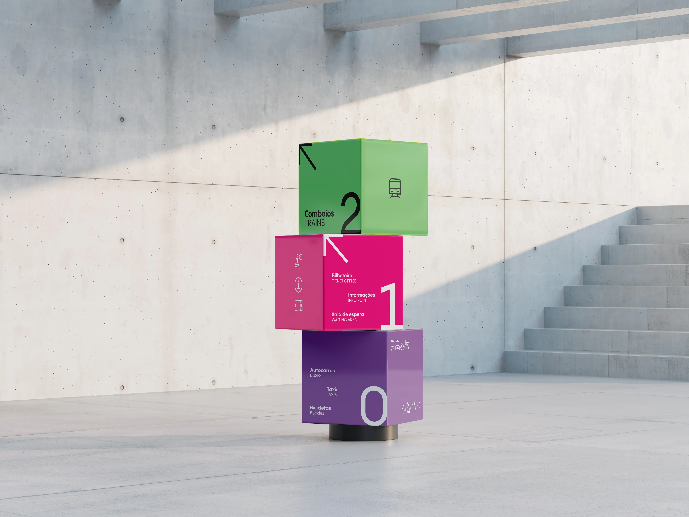
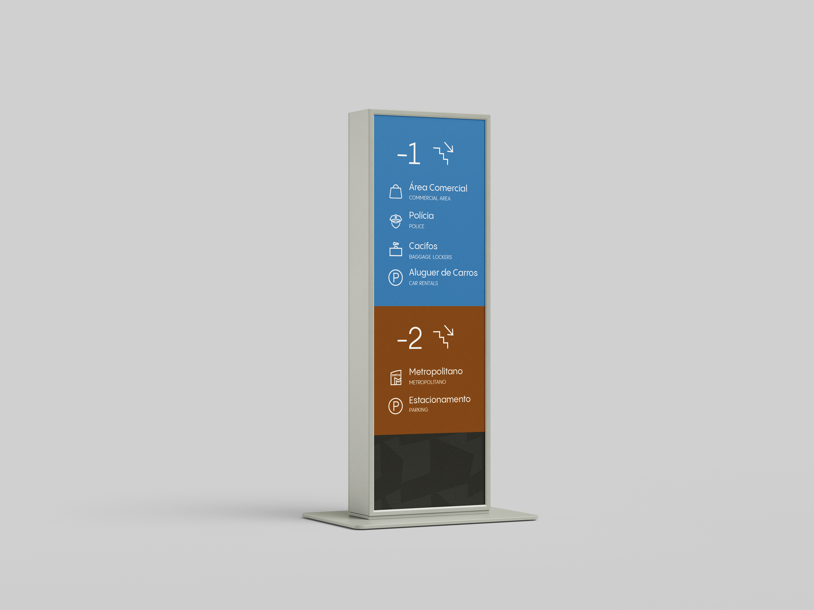
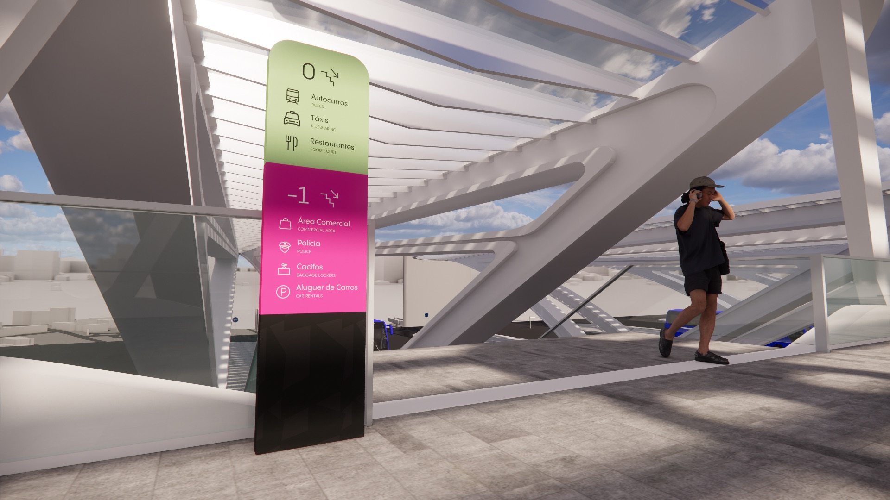

Overview
—
001
The Challenge
Gare do Oriente is Portugal's busiest station—a stunning architectural sculpture by Calatrava. But beneath its beauty lies a navigation problem: confusing signage, poorly placed ticket booths, and a lack of clear visual identity.
Our goal was to create a user-first wayfinding system that restores clarity, builds trust, and turns Gare do Oriente into an intuitive, human-centered transport hub.
Brand System
—
002
Flexible Brand System
We extracted shapes from Calatrava's architecture and created a clean, modern wordmark in two formats. The color palette balances clarity and energy: acid green (#ACD591), black (#2C2B2B), white, pink (#D53D96), blue (#3372A9), and purple (#9379AB).
Every element was designed to remain legible at small sizes and in complex environments, ensuring consistency across digital and physical touchpoints.
Applications
—
003
Wayfinding in Context
We designed and prototyped signage, iconography, maps, and mobile screens across multiple user touchpoints. From color-coded ceiling signs to platform identifiers and floor-specific maps, each element follows strict alignment and contrast rules.
The system was tested through site visits, interviews with commuters and staff, and 3D renders to visualize implementation.







Mobile App
UX/UI
—
004
The Gare App
Our app brings users closer to authentic Lisbon experiences through engaging infographics, curated routes by local guides, and user-generated content highlighting small businesses and cultural traditions.
Key features include insightful articles in partnership with local organizations, a reward system for engagement, and an interactive transport map with category filters and tailored public transport directions.


Documentation
—
005
Explore the Full Brand Book
Browse through the complete brand guidelines, wayfinding system specifications, and design documentation.